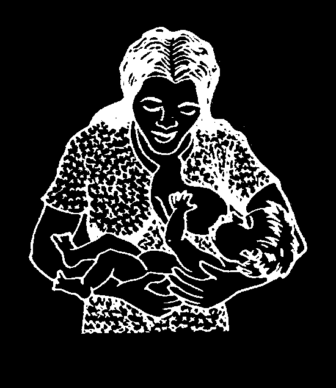
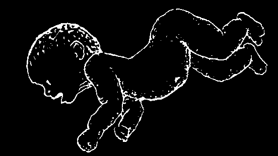
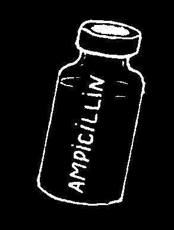
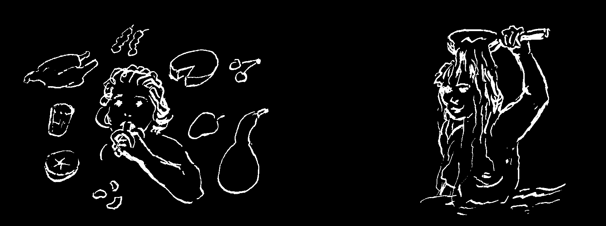
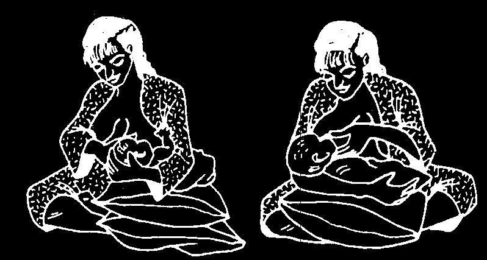
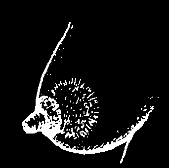
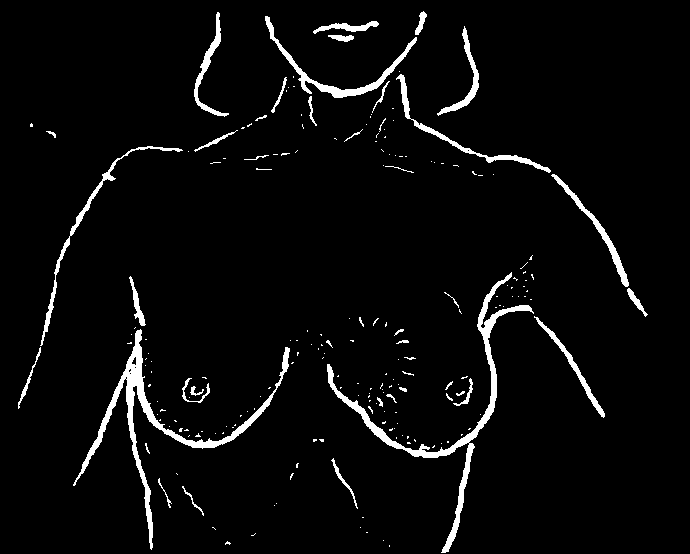
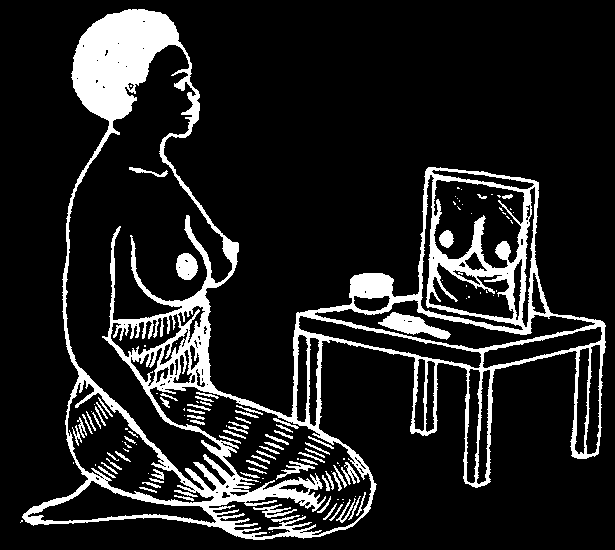
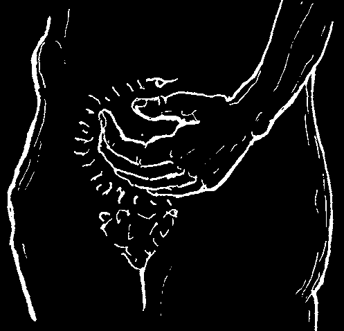
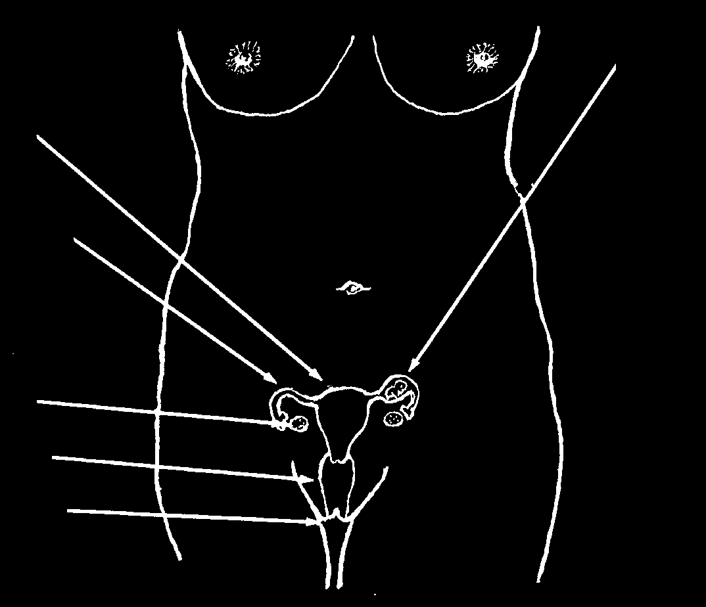

Keeping the Baby Warm—but Not Too Warm
Protect the baby from cold, but also from too much heat. Dress him as warmly as you feel like dressing yourself.
IN COLD WEATHER
BUT IN HOT WEATHER (OR
WHEN THE BABY HAS A FEVER)
WRAP THE BABY WELL.
LEAVE HIM NAKED.
To keep a baby just warm enough, keep him close to his mother’s body. This is especially important for a baby that is born early or very small. See 'Special Care for
Small, Early, and Underweight Babies’, p. 405.
Cleanliness
It is important to follow the Guidelines of Cleanliness as discussed in Chapter 12.
Take special care with the following:
♦ Change the baby’s diapers (nappy) or bedding each time he wets or dirties them.
If the skin gets red, change the diaper more often—or better, leave it off!
(See p. 215.)
♦ After the cord drops off, bathe the baby daily with mild soap and warm water.
♦ If there are flies or mosquitos, cover the baby’s crib with mosquito netting or a thin cloth.
♦ Persons with open sores, colds, sore throat, tuberculosis, or other infectious illnesses should not touch or go near the newborn baby or the woman while she is giving birth.
♦ Keep the baby in a clean place away from smoke and dust.


Feeding
(Also see “The Best Diet for Small Children,” p. 120.)
Breast milk is by far the best food for a baby. Babies who nurse on breast milk are healthier, grow stronger, and are less likely to die. This is why:
• Breast milk has a better balance of what the baby needs than does any other milk, whether fresh, canned, or powdered.
• Breast milk is clean. When other foods are given, especially by bottle feeding, it is very hard to keep things clean enough to prevent the baby from getting diarrhea and other sicknesses.
• The temperature of breast milk is always right.
• Breast milk has things in it (antibodies) that help protect the baby against certain illnesses, such as diarrhea, measles, and polio.
The mother should give her breast to the baby as soon as he is born. For the first few days the mother’s breasts usually produce very little milk. This is normal.
She should continue to nurse her baby often—at least every two hours. The baby’s sucking will help her produce more milk. If the baby seems healthy, gains weight, and wets her diaper (nappy) regularly, the mother is producing enough milk.
It is best for the baby if the mother gives him only breast milk for the first
6 months. After that, she should continue to breastfeed her baby, but should begin to give him other nourishing foods also (see p. 122). Mothers with HIV should stop breastfeeding when the baby is 12 months old if they can give enough other nutritious foods.
HOW A MOTHER CAN PRODUCE MORE BREAST MILK:
She should...
♦ drink plenty of liquids,
♦ eat as well as possible, especially food with a lot of calcium (like milk products) and body building foods (see p. 110),
♦ get plenty of sleep and avoid getting very tired or upset,
♦ nurse her baby more often—at least every 2 hours.
BOTTLE-FED BABIES ARE MORE LIKELY
BREAST-FED BABIES ARE HEALTHIER.
TO GET SICK AND DIE.
Care in Giving Medicines to the Newborn
Many medicines are dangerous for the newborn. Use only medicines you are sure are recommended for the newborn and use them only when they are absolutely necessary. Be sure you know the right dose and do not give too much.
Chloramphenicol, for example, is dangerous to newborns, especially if the baby is premature or underweight (less than 2 kilograms).
Sometimes it is important to give medicines to a newborn. For example, giving cotrimoxazole to a baby whose mother has HIV can protect the baby’s health.
See p. 358.
ILLNESSES OF THE NEWBORN
It is very important to notice any problem or illness a baby may have and to act quickly.
Diseases that take days or weeks to kill adults can kill a baby in a matter of hours.
Problems the Baby Is Born With (Also see p. 316)
These may result from something that went wrong with the development of the baby in the womb or from damage to the baby while he was being born. Examine the baby carefully immediately after birth. If he shows any of the following signs, something is probably seriously wrong with him:
• If he does not breathe as soon as he is born.
• If his pulse cannot be felt or heard, or is less than 100 beats per minute.
• If his face and body are white, blue, or yellow after he has begun breathing.
• If his arms and legs are floppy—he does not move them by himself or when you pinch them.
• If he grunts or has difficulty breathing after the first 15 minutes.
Some of these problems may be caused by brain damage at birth. They are almost never caused by infection (unless the water broke more than 12 hours before birth). Common medicines probably will not help. Keep the baby warm, but not too warm (see p. 270). Try to get medical help.
If the newborn baby vomits or shits blood, or develops many bruises, she may need vitamin K (see p. 392).
If the baby does not urinate or have a bowel movement in the first 2 days, also seek medical help.
Problems that Result After the Baby Is Born
(in the first days or weeks)
1. Pus or a bad smell from the navel (cord) is a dangerous sign. Watch for early signs of tetanus (p. 182) or bacterial infection of the blood (p. 275). Soak the cord in alcohol and leave it open to the air. If the skin around the cord becomes hot and red, treat with ampicillin (p. 352) or with penicillin and streptomycin (p. 353).

2. Either low temperature (below 35° C) or high fever can be a sign of infection.
High fever (above 39° C) is dangerous for the newborn. Take off all clothing and sponge the baby with cool (not cold) water as shown on page 76. Also look for signs of dehydration (see p. 151). If you find these signs, give the baby breast milk and also Rehydration Drink (p. 152).
3. Seizures (fits, convulsions, see p. 178). If the baby also has fever, treat it as just described. Be sure to check for dehydration. Seizures that begin the day of birth could be caused by brain damage at birth. If seizures begin several days later, look carefully for signs of tetanus (p. 182) or meningitis (p. 185).
4. The baby does not gain weight. During the first days of life, most babies lose a little weight. This is normal. After the first week, a healthy baby should gain about
200 g., a week. By two weeks the healthy baby should weigh as much as he did at birth. If he does not gain weight, or loses weight, something is wrong. Did the baby seem healthy at birth? Does he feed well? Examine the baby carefully for signs of infection or other problems. If you cannot find out the cause of the problem and correct it, get medical help.
5. Vomiting. When healthy babies burp (or bring up air they have swallowed while feeding), sometimes a little milk comes up too. This is normal. Help the baby bring up air after feeding by holding him against your shoulder and patting his back gently, like this.
If a baby vomits when you lay him down after nursing, try sitting him upright for a while after each feeding.
A baby who vomits violently, or so much and so often that he begins to lose weight or become dehydrated, is
BURP YOUR BABY
ill. If the baby also has diarrhea, he probably has a gut
AFTER FEEDING.
infection (p. 157). Bacterial infection of the blood (see the next pages), meningitis
(p. 185), and other infections may also cause vomiting.
If the vomit is yellow or green, there may be a gut obstruction (p. 94), especially if the belly is very swollen or the baby has not been having bowel movements. Take the baby to a health center at once.
6. The baby stops sucking well. If more than 4 hours pass and the baby still will not nurse, this is a danger sign—especially if the baby seems very sleepy or ill, or if he cries or moves differently from normal. Many illnesses can cause these signs, but the most common and dangerous causes in the first 2 weeks of life are a bacterial infection of the blood (see next 2 pages) and tetanus (p. 182).
A baby who stops nursing during the second to fifth day of life may have a bacterial infection of the blood.
A baby who stops nursing during the fifth to fifteenth day may have tetanus.


If a Baby Stops Sucking Well or Seems Ill
Examine him carefully and completely as described in Chapter 3. Be sure to check the following:
• Notice if the baby has difficulty breathing. If the nose is stuffed up, suck it out as shown on page 164. Fast breathing (50 or more breaths a minute), blue color, grunting, and sucking in of the skin between the ribs with each breath are signs of pneumonia (p. 171). Small babies with pneumonia often do not cough;
sometimes none of the common signs are present. If you suspect pneumonia, treat as for a bacterial infection of the blood (see the next page).
• Look at the baby’s skin color.
If the lips and face are blue, consider pneumonia (or a heart defect or other problem the baby was born with).
If the face and whites of the eyes begin to get yellow (jaundiced) in the first day of life or after the fifth day, this is serious. Get medical help. Some yellow color between the second and fifth day of life is usually not serious. Give plenty of breast milk by spoon if necessary. Take off all the baby’s clothes and put him in bright light near a window (but not direct sunlight).
• Feel the soft spot on top of the head (fontanel). See p. 9.
If the soft spot
If the soft spot is is SUNKEN,
SWOLLEN, the the baby may be baby may have
DEHYDRATED.
MENINGITIS.
IMPORTANT: If a baby has meningitis and dehydration at the same time, the soft spot may feel normal. Be sure to check for other signs of both dehydration (see p. 151)
and meningitis (see p. 185).
• Watch the baby’s movements and expression on his face.
Stiffness of the body or strange movements may be signs of tetanus, meningitis, or brain damage from birth.
If, when the baby is touched or moved, the muscles of his face and body suddenly tighten, this could be tetanus. See if his jaw will open and check his knee reflexes (p. 183).

If the baby’s eyes roll back or flutter when he makes sudden or violent movements, he probably does not have tetanus. Such seizures may be caused by meningitis, but dehydration and high fever are more common causes. Can you put the baby’s head between his knees? If the baby is too stiff for this or cries out in pain, it is probably meningitis (see p. 185).
• Look for signs of a bacterial infection in the blood.
Bacterial Infection in the Blood (Septicemia)
Newborn babies cannot fight infections well. Therefore, bacteria that enter the baby’s skin or cord at the time of birth often get into the blood and spread through his whole body. Since this takes a day or two, septicemia is most common after the second day of life.
Signs:
Signs of infection in newborn babies are different from those in older children.
In the baby, almost any sign could be caused by a serious infection in the blood.
Possible signs are:
• does not suck well
• swollen belly
• seems very sleepy
• yellow skin (jaundice)
• very pale (anemic)
• seizures (convulsions)
• vomiting or diarrhea
• times when the baby turns blue
• fever or low temperature (below 35° C)
Each of these signs may be caused by something other than septicemia, but if the baby has several of these signs at once, septicemia is likely.
Newborn babies do not always have a fever when they have a serious infection.
The temperature may be high, low, or normal.
Treatment when you suspect septicemia in the newborn:
♦ Inject 50 mg. of ampicillin (p. 352) for each kilogram the baby weighs, 2 times a day for a baby less than 1 week old or 3 times a day if the baby is older than 1 week. If you cannot calculate the dosage, inject the average dose of
150 mg. of ampicillin.
♦ Also inject 5 mg. of gentamicin for each kilogram the baby weighs. Only give gentamicin once a day. If you cannot calculate the dosage, inject the average dose of 15 mg. of gentamicin for a baby less than 1 week old, or 20 mg. if the baby is older than 1 week.
♦ Be sure the baby has enough liquids. Spoon feed breast milk and Rehydration
Drink, if necessary (see p. 152).
♦ Try to get medical help.
Infections in newborn babies are sometimes hard to recognize.
Often there is no fever. If possible, get medical help. If not, treat with ampicillin and gentamicin as described above.
Ampicillin is one of the safest and most useful antibiotics for babies.

THE MOTHER’S HEALTH AFTER CHILDBIRTH
Diet and Cleanliness
As was explained in Chapter 11, after she gives birth to a baby, the mother can and should eat every kind of nutritious food she can get. She does not need to avoid any kind of food. Foods that are especially good for her are milk, cheese, chicken, eggs, meat, fish, fruits, vegetables, grains, beans, groundnuts, etc. If all she has is corn and beans, she should eat them both together at each meal. A good diet helps the mother make plenty of milk for her baby.
The mother can and should bathe in the first few days after giving birth. In the first week, it is better if she bathes with a wet towel and does not go into the water. Bathing is not harmful following childbirth. In fact, women who let many days go by without bathing may get infections that will make their skin unhealthy and their babies sick.
During the days and weeks following childbirth, the mother should:
eat nutritious foods and bathe regularly.
Childbirth Fever (Infection after Giving Birth, Womb Infection)
Sometimes a mother develops fever and infection after childbirth, often because someone attending the birth did not keep everything very clean or because he or she put a hand inside the mother.
The signs of childbirth fever are: Chills or fever, headache or low back pain, sometimes pain in the belly, and a foul-smelling or bloody discharge from the vagina.
Treatment:
Give 3 medicines: inject 2 grams of ampicillin for the first dose, and then 1 gram 4 times a day. Also inject 80 mg. of gentamicin for the first dose, then 60 mg. 3 times a day. Also give 500 mg. of metronidazole by mouth 3 times a day. Continue giving these medicines until after the fever has been gone for 2 days.
Childbirth fever can be very dangerous. If the mother does not start to feel better the next day, get medical help.

BREASTFEEDING—AND CARE OF THE BREASTS
Taking good care of the breasts is important for the health of both the mother and her baby. The baby should begin to breastfeed soon after it is born. A baby may want to breastfeed right away or just lick the breast and be held. Encourage the baby to suck because it will help the milk to start flowing. This will also help the mother’s womb to contract and the afterbirth to come out sooner. The mother’s first milk is a thick yellow liquid (called colostrum). The first milk has everything a new baby needs to prevent infection and is rich in protein. The first milk is very good for the baby, so...
BEGIN BREASTFEEDING EARLY
Put the baby to the mother’s breast as soon as possible.
Normally, the breasts make as much milk as the baby needs. If the baby empties them, they begin to make more. If the baby does not empty them, soon they make less. When a baby gets sick and stops sucking, after a few days the mother’s breasts stop making milk. So when the baby can suck again, and needs a full amount of milk, there may not be enough. For this reason,
When a baby is sick and unable to take much milk, it is important that the mother keep producing lots of milk by milking her breasts with her hands.
TO MILK THE BREASTS BY HAND
Take hold of the breasts then move your hands
To squeeze the milk out, way back, like this, forward, squeezing.
press behind the nipple.
Another reason it is important to milk the breasts if the baby stops sucking is that this keeps the breasts from getting too full. When they are too full, they are painful. A breast that is painfully full is more likely to develop an abscess. Also, the baby may have trouble sucking when the breast is very full.
If your baby is too weak to suck, squeeze milk out of your breast by hand and give it to the baby by spoon or dropper.
Regular bathing will help to keep your breasts clean. It is not necessary to clean your breasts and nipples each time you breastfeed your baby. Do not use soap to clean your breasts, as this may cause cracking of the skin, sore nipples, and infection.


Sore or Cracked Nipples
Sore or cracked nipples develop when the baby sucks only the nipple instead of taking the nipple and part of the breast when she is breastfeeding.
Treatment:
It is important to keep breastfeeding the baby even if it hurts. To avoid sore nipples, breastfeed often, for as long as the baby wants to suck, and be sure the baby is taking as much of the breast into her mouth as she can. It also helps to change the baby’s position each time she nurses.
If only one nipple is sore, let the baby suck on the other side first, then let the baby suck from the sore nipple. After the baby is finished, squeeze out a little milk and rub the milk over the sore nipple. Let the milk dry before covering the nipple. The milk will help the nipple heal. If the nipple oozes a lot of blood or pus, milk the breast by hand until the nipple is healed.
Painful Breasts
Pain in the breast can be caused by a sore nipple or breasts that get very full and hard. The pain will often go away in a day or two if the baby breastfeeds frequently and the mother rests in bed and drinks lots of liquids. Usually, antibiotics are not needed, but see the next section.
Breast Infection (Mastitis) and Abscess
Painful breasts and sore or cracked nipples can lead to an infection or abscess (pocket of pus).
Signs:
• Part of the breast becomes hot, red, swollen, and very painful.
• Fever or chills.
• Lymph nodes in the armpit are often sore and swollen.
• A severe abscess sometimes bursts and drains pus.
Treatment:
♦ Keep breastfeeding frequently, giving the baby the infected breast first, or milk the breast by hand, whichever is less painful.
♦ Rest and drink lots of liquids.
♦ Use hot compresses on the sore breast for 15 minutes before each feeding. Use cold compresses on the sore breast between feedings to reduce pain.
♦ Gently massage the sore breast while the baby is nursing.
♦ Take acetaminophen (p. 379) for pain.
♦ Use an antibiotic. Dicloxacillin is the best antibiotic to use (p. 350). Take
500 mg. by mouth, 4 times each day, for a full 7 days. Erythromycin (p. 354) or cotrimoxazole (p. 357) can also be used.
Prevention:
♦ Keep the nipples from cracking (see above) and don’t let the breasts get overfull.



A painful, hot lump in the breast of a nursing mother is probably a breast abscess (infection).
A painless breast lump may be cancer, or a cyst.
Breast Cancer
Most women have some small lumps in their breasts. These lumps can change in size and shape, and become tender during her monthly cycle. Sometimes, a breast lump that does not go away can be a sign of breast cancer. Successful treatment depends on spotting the first sign of possible cancer and getting medical care soon.
Surgery is usually necessary.
Signs of breast cancer:
• The woman may notice a slow-growing lump during self-examination of the breasts
(see below).
• Or the breast may have an abnormal dent or dimple—or many tiny pits like the skin of an orange.
• Often there are swollen lymph nodes in the armpit, which may or may not be painful.
• There may be redness or a sore on the breast that does not heal.
• She may have abnormal discharge from a nipple.
• At first it usually does not hurt or get hot. Later it may hurt.
SELF-EXAMINATION OF THE BREASTS
Every woman should learn how to examine her own breasts for possible signs of cancer.
She should do it once a month, preferably on the 10th day after her menstrual period started.
♦ Use a mirror to look at your breasts carefully for any new difference between the two in size or shape. Try to notice any of the above signs.
♦ While lying with a pillow or folded blanket under your back, feel your breasts with the flat of your fingers. Press your breast and roll it beneath your finger tips. Start near the nipple and go around the breast and up into the armpit.
♦ Squeeze your nipples. If blood or a discharge comes out, get medical help.
If you find a lump that is smooth or rubbery, and moves under the skin when you push it, don’t worry about it. But if it is hard, has an uneven shape, is painless, or does not move when you push it, get medical advice. Many lumps are not cancer, but it is important to find out early.


LUMPS OR GROWTHS IN THE LOWER PART OF THE BELLY
The most common lump is, of course, caused by the normal development of a baby. Abnormal lumps or masses may be caused by:
• a cyst or watery swelling, often in the ovaries
• a baby that has accidentally begun to develop outside of the womb (ectopic pregnancy), or
• cancer
All 3 of these conditions are usually painless or mildly uncomfortable at first, and become very painful later. All require medical attention and usually surgery. If you find any unusual, gradually growing lump, seek medical advice.
Cancer of the womb
Cancer of the uterus (womb), cervix (neck of the womb), or ovaries is most common in women over 40. The first sign may be anemia or unexplained bleeding. Later, an uncomfortable or painful lump in the belly may be noticed.
There is a special test called a Pap smear (Papanicolaou) to find cancer of the cervix when it is just beginning. Where it is available, all women over 20 should try to get a
Pap smear once a year. Another method is called 'visual inspection’ and uses a vinegar solution painted on the cervix. If this makes tissue turn white, then further testing or treatment is needed.
At the first suspicion of cancer, seek medical help.